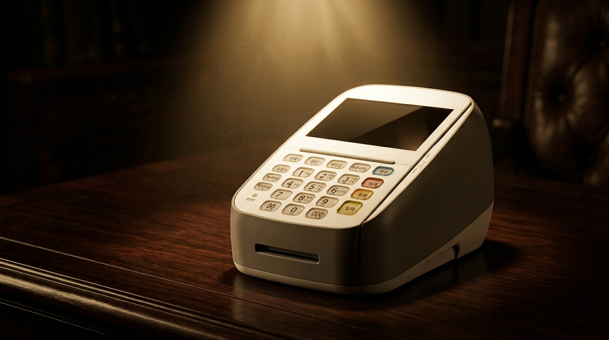
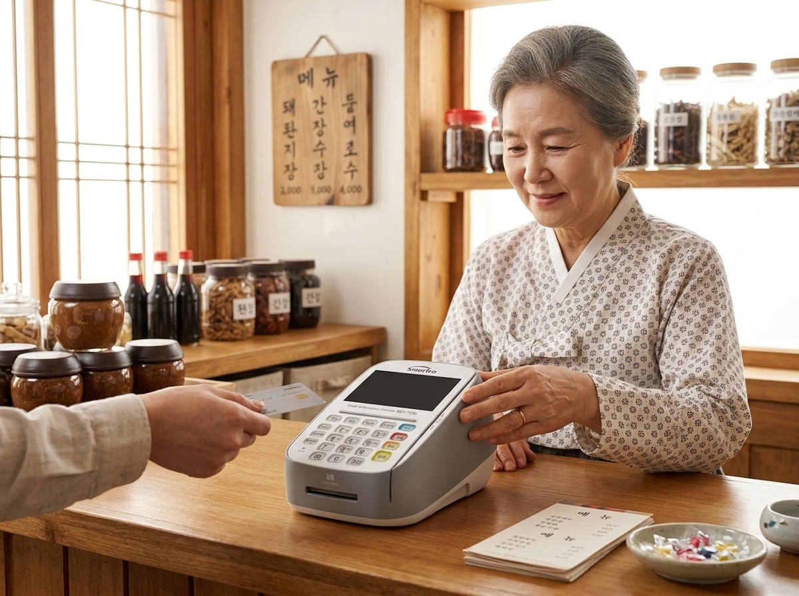
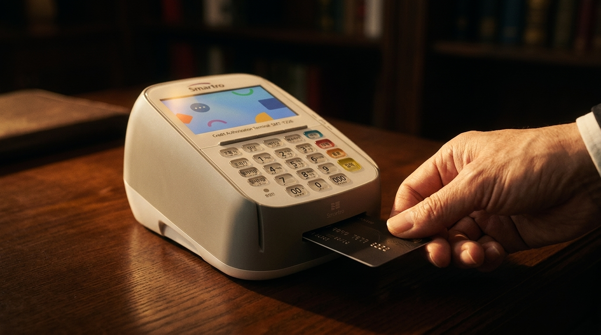

원고 「유선 카드단말기, 아직도 쓰는 이유 — 안정성이 곧 매출입니다」(2,500자). 폴더: 업로드자료\2026\07\7월31일(목)_프리미엄필름9호_유선단말기 — 검수 후 네이버 예약발행 부탁드립니다.
| 구성 | 느와르 오피스 블라인드 실루엣 → 「세월이 증명한 신뢰」 → 유선단말기 히어로(골드 조명) → 회선 직결로 흔들림 없는 승인 → 「유선단말기」 |
| 메시지 | 유행은 변해도 기본은 변하지 않는다 — 가장 안 끊기고 빠른 유선 |
| 타겟 | 고정 계산대 식당·상점·약국·정육점, 안정성 최우선 매장 |
누리네트웍스 내부 검수용 · 검색 비노출